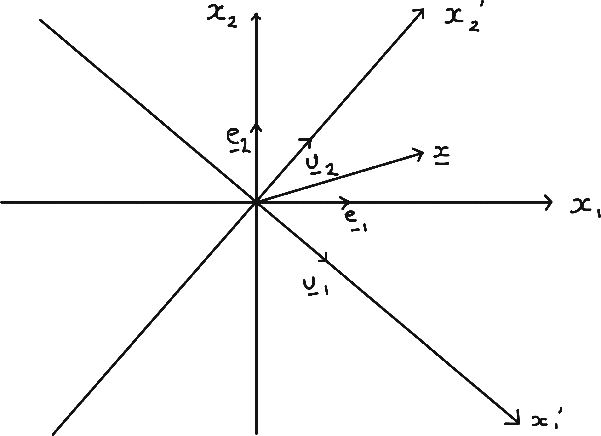
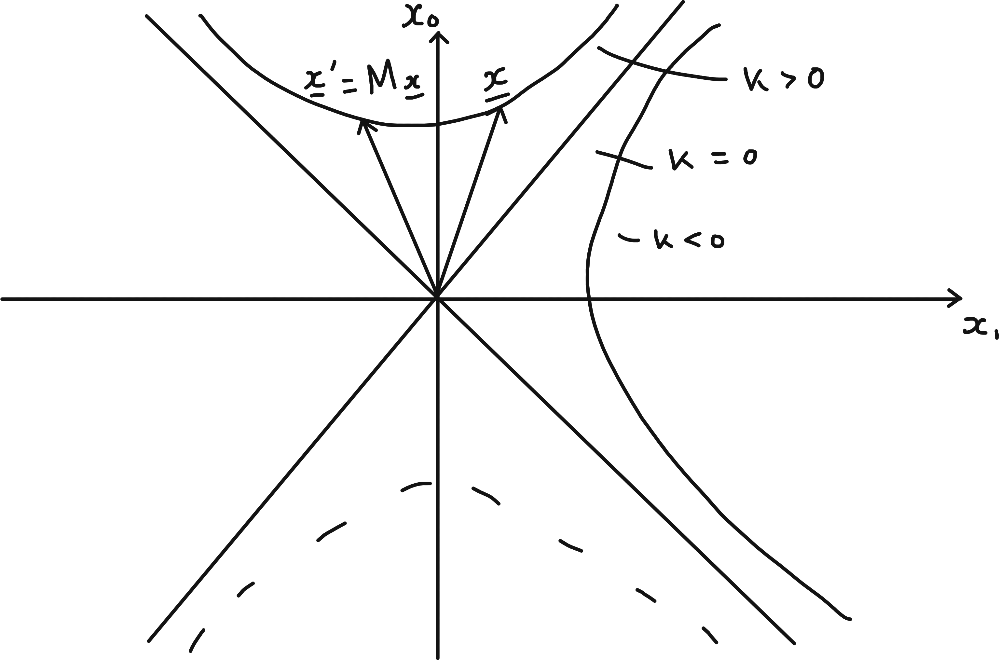

7 Changing Bases, Canonical Forms and Symmetries
7.1 Changing Bases in General
7.1.1 Definition and Proposition
Recall Matrices for Linear Maps in General given linear map \(T : V \to W\) (real or complex vector spaces) and choice of bases \[\begin{align*} \{\underline{e}_i\} \hspace{0.5cm} i &= 1, \dots, n \text{ for } V \\ \{\underline{f}_a\} \hspace{0.5cm} a &= 1, \dots, m \text{ for } W \end{align*}\] the matrix \(A\) (\(m \times n\)) w.r.t these bases is defined by \[\begin{align*} T(\underline{e}_i) &= \sum_a \underline{f}_a A_{ai}. \end{align*}\]
This definition is chosen to ensure \[\begin{align*} \underline{y} = T(\underline{x}) \iff y_a &= \sum_i A_{ai} x_i \\ &= A_{ai} x_i \ (\sum \text{ convention}) \\ \text{where } \underline{x} = \sum_i x_i \underline{e}_i,\ \underline{y} &= \sum_a y_a \underline{f}_a \\ \text{which holds since } T\left(\sum_i x_i \underline{e}_i \right) &= \sum_i x_i T(\underline{e}_i) \\ &= \sum_i x_i \left( \sum_a \underline{f}_a A_{ai} \right) \\ &= \sum_a \underbrace{\left( \sum_i A_{ai} x_i \right)}_{y_a} \underline{f}_a. \end{align*}\] The same linear map \(T\) has matrix \(A'\) w.r.t bases \[\begin{align*} \{\underline{e}'_i\} \hspace{0.5cm} i &= 1, \dots, n \text{ for } V \\ \{\underline{f}'_a\} \hspace{0.5cm} a &= 1, \dots, m \text{ for } W \end{align*}\] defined by \[\begin{align*} T(\underline{e}'_i) &= \sum_a \underline{f}'_a A'_{ai}. \end{align*}\] To relate \(A\) and \(A'\) we need to say how bases are related, and change of base matrices \(P\) (\(n \times n\)) and \(Q\) (\(m \times m\)) are defined by \[\begin{align*} \underline{e}'_i &= \sum_j \underline{e}_j P_{ji},\ \underline{f}'_a = \sum_b \underline{f}_b Q_{ba} \end{align*}\] Note: \(P\) and \(Q\) are invertible; in relation above we can exchange \(\underline{e}_i\) and \(\underline{e}'_i\) with \(P \to P^{-1}\) and similarly for \(Q\).
Proposition 7.1 With definitions as above \[\begin{align*} A' = Q^{-1} A P \end{align*}\] which is the change of basis formula for matrix of a linear map.
Example 7.1 \(n = 2,\ m = 3\) \[\begin{align*} T(\underline{e}_1) &= \underline{f_1} + 2 \underline{f}_2 - \underline{f}_3 = \sum_a \underline{f}_a A_{a 1} \\ T(\underline{e}_2) &= -\underline{f_1} + 2 \underline{f}_2 + \underline{f}_3 = \sum_a \underline{f}_a A_{a 2} \\ \implies A &= \begin{pmatrix}1 & -1 \\2 & 2 \\-1 & 1\end{pmatrix} \end{align*}\] New basis for \(V\) \[\begin{align*} \underline{e}'_1 &= \underline{e}_1 - \underline{e}_2 = \sum_i \underline{e}_i P_{i 1} \\ \underline{e}'_2 &= \underline{e}_1 + \underline{e}_2 = \sum_i \underline{e}_i P_{i 2} \\ \implies P &= \begin{pmatrix}1 & 1 \\-1 & 1\end{pmatrix} \end{align*}\] New basis for \(W\) \[\begin{align*} \underline{f}'_1 &= \underline{f}_1 - \underline{f}_3 = \sum_i \underline{e}_i P_{i 1} \\ \underline{f}'_2 &= \underline{f}_2 = \sum_i \underline{e}_i P_{i 2} \\ \underline{f}'_3 &= \underline{f}_1 + \underline{f}_3 = \sum_i \underline{e}_i P_{i 3} \\ \implies Q &= \begin{pmatrix} 1 & 0 & 1 \\ 0 & 1 & 0 \\ -1 & 0 & 1 \end{pmatrix} \end{align*}\] Change of basis formula: \[\begin{align*} A' &= Q^{-1} A P \\ &= \begin{pmatrix} \frac{1}{2} & 0 & -\frac{1}{2} \\ 0 & 1 & 0 \\ \frac{1}{2} & 0 & \frac{1}{2} \end{pmatrix} \begin{pmatrix}1 & -1 \\2 & 2 \\-1 & 1\end{pmatrix} \begin{pmatrix}1 & 1 \\-1 & 1\end{pmatrix} \\ &= \begin{pmatrix}2 & 0 \\4 & 0 \\0 & 0\end{pmatrix}. \end{align*}\] Direct check: \[\begin{align*} T(\underline{e}'_1) &= 2 \underline{f}'_1 \\ T(\underline{e}'_2) &= 4 \underline{f}'_2 \ \checkmark. \end{align*}\]
7.1.2 Proof of proposition
Proof. \[\begin{align*} T(\underline{e}'_i) &= T\left( \sum_j \underline{e}_j P_{ji} \right) \ \text{ definition of $P$} \\ &= \sum_j T(\underline{e}_j) P_{ji} \ \text{ linearity of $T$} \\ &= \sum_j \sum_a \underline{f}_a A_{aj} P_{ji} \ \text{ definition of $A$} \\ T(\underline{e}'_i) &= \sum_b \underline{f}'_b A'_{bi} \ \text{definition of $A'$} \\ &= \sum_b \sum_a \underline{f}_a Q_{ab} A'_{bi} \ \text{ definition of $Q$} \end{align*}\] Comparing coefficients of \(\underline{f}_a\) as it is a basis \[\begin{align*} \sum_j A_{aj} P_{ji} = \sum_b Q_{ab} A'_{bi} \\ \text{or } AP = QA'. \end{align*}\]
7.1.3 Approach using vector components
Consider
\[\begin{align*}
\underline{x} &= \sum_j x_j \underline{e}_j \\
&= \sum_i x'_i \underline{e}'_i \\
&= \sum_j \left( \sum_i P_{ji} x'_i \right) \underline{e}_j \\
\implies x_j &= P_{ji} x'_i \\
\text{Write } X &= \begin{pmatrix}x_1 \\\vdots \\x_n\end{pmatrix},\ X' = \begin{pmatrix}x'_1 \\ \vdots \\ x'_n \end{pmatrix} \\
\text{then } X &= PX' \text{ or } X' = P^{-1} X
\end{align*}\]
Note: some care needed if \(V = \mathbb{R}^n\), e.g. \(n = 2\) with \(\underline{e}_1 = \begin{pmatrix}1 \\1\end{pmatrix},\ \underline{e}_2 = \begin{pmatrix}1 \\-1\end{pmatrix}\) then \(\underline{x} = \begin{pmatrix}5 \\1\end{pmatrix} \in \mathbb{R}^2\) has \(\underline{x} = 3 \underline{e}_1 + 2 \underline{e}_2\) so \(X = \begin{pmatrix}3 \\2\end{pmatrix}\).
Similarly
\[\begin{align*}
\underline{y} &= \sum_b y_j \underline{f}_b \\
&= \sum_a y'_a \underline{f}'_a \\
\implies y_b &= Q_{ba} y'_a \\
\text{Then } Y &= QY' \text{ or } Y' = Q^{-1} Y \\
\text{where } Y &= \begin{pmatrix}y_1 \\\vdots \\y_m \end{pmatrix},\ Y' = \begin{pmatrix}y'_1 \\ \vdots \\ y'_m \end{pmatrix}
\end{align*}\]
Now, matrices \(A, A'\) are defined to ensure \(Y = AX\) and \(Y' = A' X'\).
\[\begin{align*} \text{But } Y' &= Q^{-1} Y = Q^{-1} A X \\ &= (Q^{-1} A P) X' \\ &= A' X' \end{align*}\] which is true \(\forall \; \underline{x}\), so \(A' = Q^{-1} A P\).
7.2 Jordan Canonical/ Normal Form
This results classifies \(n \times n\) complex matrices up to similarity.
Proposition 7.2 Any \(2 \times 2\) complex matrix \(A\) is similar to one of the following:
\(A' = \begin{pmatrix}\lambda_1 & 0 \\0 & \lambda_2\end{pmatrix}\) with \(\lambda_1 \neq \lambda_2,\ \chi_A = (t - \lambda_1) (t - \lambda_2)\).
\(A' = \begin{pmatrix}\lambda & 0 \\0 & \lambda\end{pmatrix}\) with \(\chi_A = (t - \lambda)^2\).
\(A' = \begin{pmatrix}\lambda & 1 \\0 & \lambda\end{pmatrix}\) with \(\chi_A = (t - \lambda)^2\).
Proof. \(\chi_A(t)\) has 2 roots over \(\mathbb{C}\).
For distinct roots/ evals \(\lambda_1, \lambda_2\) we have \(M_1 = m_1 = M_2 = m_2 = 1\) and eigenvectors \(\underline{v}_1, \underline{v}_2\) provide a basis. Hence \(A' = P^{-1} A P\) where eigenvectors are columns of \(P\).
For repeated root/ eval \(\lambda\), if \(M_\lambda = m_\lambda = 2\), then same argument applies.
For repeated root/ eval \(\lambda\), with \(M_\lambda = 2\) and \(m_\lambda = 1\), let \(\underline{v}\) be an eigenvector for \(\lambda\) and \(\underline{w}\) any linearly independent vector. Then \[\begin{align*} A \underline{v} &= \lambda \underline{v} \\ A \underline{w} &= \alpha \underline{v} + \beta \underline{w}. \end{align*}\] Matrix of map w.r.t basis \(\{\underline{v}, \underline{w}\}\) is \[\begin{align*} \begin{pmatrix}\lambda & \alpha \\0 & \beta\end{pmatrix}. \end{align*}\] But \(\beta = \lambda\) (otherwise we get case (i) with evals \(\lambda, \beta\)) and \(\alpha \neq 0\) (otherwise case (ii)). Now set \(\underline{u} = \alpha \underline{v}\) and note \[\begin{align*} A \underline{u} = \lambda \underline{u} \\ A \underline{w} = \underline{u} + \lambda \underline{w} \end{align*}\] so w.r.t. basis \(\{ \underline{u}, \underline{w}\}\) matrix is \[\begin{align*} A' = \begin{pmatrix}\lambda & 1 \\0 & \lambda\end{pmatrix}. \end{align*}\]
Example 7.2 ((using a slightly different approach)) \[\begin{align*} A &= \begin{pmatrix}1 & 4 \\-1 & 5\end{pmatrix} \\ \implies \chi_A(t) &= (t - 3)^2 \\ A - 3 I &= \begin{pmatrix}-2 & 4 \\-1 & 2\end{pmatrix}. \end{align*}\] Choose \(\underline{w} = \begin{pmatrix}1 \\0\end{pmatrix}\) which is not an eigenvector and then \(\underline{u} = (A - 3I) \underline{w} = \begin{pmatrix}-2 \\-1\end{pmatrix}\). But \((A - 3I)^2 = 0\) by Cayley-Hamilton Theorem, 6.4, so \((A - 3I)^2 \underline{w} = (A - 3I) \underline{u} = 0\) so \[\begin{align*} A \underline{u} &= 3 \underline{u} \\ A \underline{w} &= \underline{u} + 3 \underline{w} \end{align*}\] so basis \(\{ \underline{u}, \underline{w}\}\) gives Jordan Canonical Form. Check: \(P = \begin{pmatrix}-2 & 1 \\-1 & 0\end{pmatrix} \implies P^{-1} = \begin{pmatrix}0 & -1 \\1 & -2\end{pmatrix}\) so \(P^{-1} A P = \begin{pmatrix}3 & 1 \\0 & 3\end{pmatrix}\).
Generalisation to larger matrices can be considered, starting with \(N = \begin{pmatrix}0 & 1 & & \\ & 0 & \ddots & \\ & & \ddots & 1 \\ & & & 0\end{pmatrix}\) (\(n \times n\)) when applied to standard basis vectors gives \(\underline{e}_n \mapsto \underline{e}_{n-1} \mapsto \dots \mapsto \underline{e}_1 \mapsto \underline{0}\). Note \(J = \lambda I + N\) then \(\chi_J(t) = (\lambda - t)^n\) but \(m_\lambda = 1\) (\(M_\lambda = n\)).
Theorem 7.1 Any \(n \times n\) complex matrix \(A\) is similar to a matrix \(A'\) with block form \[\begin{align*} A' &= \begin{pmatrix} \boxed{J_{n_1}(\lambda_1)} & & & \\ & \boxed{J_{n_2}(\lambda_2)} & & \\ & & \ddots & \\ & & & \boxed{J_{n_r}(\lambda_r)} \end{pmatrix} \end{align*}\] where each diagonal block is a Jordan block with form \[\begin{align*} J_p(\lambda) &= \begin{pmatrix} \lambda & 1 & & & \\ & \lambda & 1 & & \\ & & \lambda & \ddots & \\ & & & \ddots & 1 \\ & & & & \lambda \end{pmatrix} \end{align*}\] (\(p \times p\)) with \(n_1 + n_2 + \dots + n_r = n\), \(\lambda_1, \lambda_2, \dots, \lambda_r\) are the eigenvalues of \(A\) and \(A'\) (same eigenvalue may appear in more than one block).
\(A\) is diagonalisable iff \(A'\) consists of \(1 \times 1\) Jordan blocks only.
Proof. See Linear Algebra and GRM in Part IB.
7.3 Conics and Quadrics
7.3.1 Quadrics in General
Definition 7.1 (Quadric) A quadric in \(\mathbb{R}^n\) is a hypersurface defined by \[\begin{align*} Q(\underline{x}) = \underline{x}^T A \underline{x} + \underline{b}^T \underline{x} + c = 0 \end{align*}\] for some \(A\), \(n \times n\) real symmetric, non-zero matrix, \(\underline{b} \in \mathbb{R}^n\), \(c \in \mathbb{R}\). So \(Q(\underline{x}) = A_{ij} x_i x_j + b_i x_i + c = 0\).
Consider classifying solutions up to geometrical equivalence : no distinction between solutions related by isometries in \(\mathbb{R}^n\), i.e. related by
- translation - change in origin
- orthogonal transformation about origin - change in the axes
If \(A\) is invertible (no zero eigenvalues) then by setting \(\underline{y} = \underline{x} + \frac{1}{2} A^{-1} \underline{b}\) we have \[\begin{align*} \underline{y}^T A \underline{y} &= (\underline{x} + \frac{1}{2}A^{-1} \underline{b})^T A (\underline{x} + \frac{1}{2}A^{-1} \underline{b}) \\ &= \underline{x}^T A \underline{x} + \underline{b}^T \underline{x} + \frac{1}{4} \underline{b}^T A^{-1} \underline{b} \end{align*}\] since \((A^{-1} \underline{b})^T = \underline{b} A^{-1}\) as \(A\) is symmetric so \(\frac{1}{2} (A^{-1} \underline{b})^T A \frac{1}{2} (A^{-1} \underline{b})\) is the last term.
Then \(Q(\underline{x}) = 0 \iff \mathcal{F}(\underline{y}) = k\) with \(\mathcal{F}(\underline{y}) = \underline{y}^T A \underline{y}\) (a quadratic form w.r.t. new origin \(\underline{y} = 0\)) and \(k = \frac{1}{4} \underline{b}^T A^{-1} \underline{b} - c\). Diagonalise \(\mathcal{F}\) as in Quadratic Forms: orthonormal eigenvectors give principal axes; eigenvalues of \(A\) and value of \(k\) determine nature of this quadric.
Examples in \(\mathbb{R}^3\) given in In \(\mathbb{R}^3\)
eigenvalues \(> 0\) and \(k > 0\) give ellipsoid
eigenvalues have different signs and \(k \neq 0\) gives a hyperboloid.
If \(A\) has one or more zero eigenvalues then analysis changes and simplest standard form may have both linear and quadratic terms.
7.3.2 Conics
Quadrics in \(\mathbb{R}^2\) are curves, *conics.
If \(\det A \neq 0\)
By completing the square and diagonalising we get a standard form \[\begin{align*} \lambda_1 x_1'^2 + \lambda_2 x_2'^2 &= k \end{align*}\]\(\lambda_1, \lambda_2 > 0 \implies\) ellipse for \(k > 0\), point for \(k = 0\) and no soln for \(k < 0\).
\(\lambda_1 > 0, \lambda_2 < 0 \implies\) hyperbola for \(k > 0\) or \(k < 0\) and a pair of lines for \(k = 0\).
e.g. \(x_1'^2 - x_2'^2 = (x_1 - x_2) (x_1 + x_2) = 0\).
If \(\det A = 0\)
Suppose \(\lambda_1 > 0\) and \(\lambda_2 = 0\); diagonalise \(A\) in original formula to get \[\begin{align*} \lambda_1 x_1'^2 + b_1' x_1' + b_2' x_2' + c &= 0 \\ \iff \lambda_1 x_1''^2 + b_2' x_2' + c' &= 0 \end{align*}\] where \(x_1'' = x_1' + \frac{1}{2 \lambda_1} b_1'\) and \(c' = c - \frac{b_1'^2}{4 \lambda_1^2}\)If \(b_2' = 0\) we get a pair of lines for \(c' < 0\), a single line for \(c' = 0\) and no soln for \(c' > 0\)
If \(b_2' \neq 0\) equations becomes \(\lambda_1 x_1''^2 + b_2 x_2'' = 0\), a parabola, where \(x_2'' = x_2 + \frac{1}{b_2'}c'\).
7.4 Symmetries and Transformation Groups.
7.4.1 Orthogonal Transformations and Rotations in \(\mathbb{R}^n\)
\(R\) (\(n \times n\)) is orthogonal \(\iff\)
\[\begin{align*}
\underset{n \times n}{R} \text{ is orthogonal} &\iff R^T R = R R^T = I \\
&\iff (R \underline{x}) \cdot (R \underline{y}) = \underline{x} \cdot \underline{y} \ \forall \; \underline{x}, \underline{y} \\
&\iff \text{ cols or rows of $R$ are orthonormal vectors}.
\end{align*}\]
The set of such matrices forms the orthogonal group \(O(n)\).
\[\begin{align*}
R \in O(n) \implies \det R = \pm 1.
\end{align*}\] (\(\det (R^T) \det R = (\det R)^2 = 1\)).
\(SO(n) = \{R \in O(n) : \det R = + 1\}\) is a subgroup, the special orthogonal group.
\(R \in O(n) \implies\) R preserves lengths and |n-dim volume|.
\(R \in SO(n) \implies\) R also preserves orientation.
\(SO(n)\) consists of all rotations in \(\mathbb{R}^n\)
Reflections belong to \(O(n)\) but not \(SO(n)\). For a specific \(H \in O(n) \setminus SO(n)\), any element of \(O(n)\) is of teh form \(R\) or \(RH\) with \(R \in SO(n)\), e.g. if \(n\) is odd, we can choose \(H = -I\).
7.4.1.1 Active and Passive points of View
For a rotation \(R\) (matrix), the transformation \[\begin{align*} x_i' = R_{ij} x_j \end{align*}\] can be viewed in two ways.
Active view point: rotation transforms vectors, i.e. \(x_i'\) are the components of the new vector so \(\underline{x}' = R \underline{x}\) w.r.t. standard basis \(\{ \underline{e}_i \}\).
Example 7.3 ($\mathbb{R}^2$)
\(|\underline{x}'|^2 = |\underline{x}|^2\)
Passive view point: rotation changes basis, i.e. \(x_i'\) are the components of same vector \(\underline{x}\) but w.r.t. new basis \(\{\underline{u}_i\}\).
Example 7.4 ($\mathbb{R}^2$) 
\[\begin{align*} \underline{u}_i &= \sum_j R_{ij} \underline{e}_j \\ &= \sum_J \underline{e}_j (R^T)_{ji} \\ &= \sum_J \underline{e}_j (R^{-1})_{ji} \end{align*}\] (compare to Quadratic Forms : \(P = R^{-1}\)).
7.4.2 2d Minkowski Space and Lorentz Transformations
Define a new “inner product” on \(\mathbb{R}^2\) by \[\begin{align*} (\underline{x}, \underline{y}) = \underline{x}^T J \underline{y} \quad \text{where } J = \begin{pmatrix}1 & 0 \\0 & -1\end{pmatrix} \\ \therefore \left( \begin{pmatrix} x_0 \\ x_1 \end{pmatrix}, \begin{pmatrix} y_0 \\ y_1 \end{pmatrix} \right) = x_0 y_0 - x_1 y_1 \end{align*}\] This is not positive definite since \((\underline{x}, \underline{x}) = \underline{x}^T J \underline{x} = x_0^2 - x_1^2\) but still bilinear and symmetric. Standard basis vectors are “orthonormal” in generalised sense \[\begin{align*} \underline{e}_0 = \begin{pmatrix}1 \\0\end{pmatrix} &\text{ and } \underline{e}_1 = \begin{pmatrix}0 \\1\end{pmatrix} \\ \text{obey } (\underline{e}_0, \underline{e}_0) &= 1 \\ (\underline{e}_1, \underline{e}_1) &= -1 \\ (\underline{e}_0, \underline{e}_0) &= 0 \end{align*}\] This new inner product is called the Minkowski metric and \(\mathbb{R}^2\) equipped with it is called Minkowski space.
Consider \(M = \begin{pmatrix}M_{00} & M_{01} \\M_{10} & M_{11}\end{pmatrix}\) giving a linear map \(\mathbb{R}^2 \to \mathbb{R}^2\). This preserves the Minkowski metric iff \[\begin{align*} (M \underline{x}, M \underline{y}) &= (\underline{x}, \underline{y}) \quad \forall \; x, y \in \mathbb{R}^2 \\ \iff (M \underline{x})^T J (M \underline{y}) &= \underline{x}^T (M^T J M) \underline{y} \\ &= \underline{x}^T J \underline{y} \quad \forall \; \underline{x}, \underline{y} \in \mathbb{R}^2 \\ \iff M^T J M &= J. \end{align*}\] The set of such matrices form a group. Now \[\begin{align*} \det (M^T J M) &= \det (M^T) \det J \det M \\ &= \det J \\ \implies (\det M)^2 &= 1 \implies \det M = \pm 1 \end{align*}\] Furthermore, \(|M_{00}| \geq 1\), so \(M_{00} \geq 1\) or \(M_{00} \leq -1\). The subgroup with \(\det M = + 1\) and \(M_{00} \geq 1\) is the Lorentz group in 2d.
General form for \(M\): require cols \(M \underline{e}_0, M \underline{e}_1\) to be orthonormal w.r.t Minkowski metric, like \(\underline{e}_0, \underline{e}_1\).
\[\begin{align*} (M \underline{e_0}, M \underline{e_0}) = M_{00}^2 - M_{10}^2 = (\underline{e_0}, \underline{e_0}) = 1 \quad (\text{hence } |M_{00}|^2 \geq 1) \end{align*}\]
Taking \(M_{00} \geq 1\), we can write \[\begin{align*} M \underline{e_0} = \begin{pmatrix} \cosh \theta \\ \sinh \theta \end{pmatrix} \end{align*}\] for some real value \(\theta\). For the other column, \[\begin{align*} (M \underline{e_0}, M \underline{e_1}) = 0;\; (M \underline{e_1}, M \underline{e_1}) = -1 \implies M \underline{e_1} = \pm \begin{pmatrix} \sinh \theta \\ \cosh \theta \end{pmatrix} \end{align*}\]10 The sign is fixed to be positive by the condition that \(\det M = +1\). \[\begin{align*} M(\theta) = \begin{pmatrix} \cosh \theta & \sinh \theta \\ \sinh \theta & \cosh \theta \end{pmatrix} \end{align*}\] For such matrices \[\begin{align*} M(\theta_1) M(\theta_2) &= M(\theta_1 + M \theta_2). \end{align*}\] This confirms that they form a group.

The curves defined by \((\underline{x}, \underline{x}) = k\) where \(k\) is a constant are hyperbolas, as shown. This is analogous to how the curves defined by \(\underline{x} \cdot \underline{x} = k\) are circles. So applying \(M\) to any vector on a given branch of a hyperbola, the resultant vector remains on the hyperbola. Allowing \(|M_{00}| \geq 1\) we would get transformations that could map \(\underline{x}\) to the dotted branch below.
7.4.3 Application to special relativity
Set \[\begin{align*} M(\theta) &= \gamma(v) \begin{pmatrix} 1 & v \\ v & 1 \end{pmatrix} \\ v &= \tanh \theta,\quad |v| < 1 \\ \gamma(v) &= (1 - v^2)^{-\frac{1}{2}} \end{align*}\] We will rename \(x_0 \to t\), which is now our time coordinate. \(x_1 \to x\), our one-dimensional space coordinate. Then, \[ \underline{x}' = M \underline{x} \iff \begin{cases} t' & = \gamma(v) (t + vx) \\ x' & = \gamma(v) (x + vt) \end{cases} \] This is a Lorentz transformation or boost relating the time and space coordinates for observers moving with relative velocity \(v\) in Special Relativity, in units where the speed of light \(c\) is taken to be 1. The factor \(\gamma\) gives rise to effects such as time dilation and length contraction.
The group property \(M(\theta_3) = M(\theta_1)M(\theta_2)\) with \(\theta_3 = \theta_1 + \theta_2\) corresponds to the velocities \[ v_i = \tanh \theta_i \implies v_3 = \frac{v_1 + v_2}{1 + v_1 v_2} \] This is consistent with the fact that all velocities are less than the speed of light, 1.
for standard inner product to get normal vector swap \(x\) and \(y\) values and make one negative, here we don’t need to make one component negative.↩︎
7.1.4 Comments
Definition of matrix \(A\) for \(T : V \to W\) w.r.t. bases \(\{ \underline{e}_i \}\) and \(\{ \underline{f}_a \}\) can be expressed: column \(i\) of \(A\) consists of components of \(T(\underline{e}_i)\) w.r.t. basis \(\{ \underline{f}_a \}\) [For \(T : \mathbb{R}^n \to \mathbb{R}^m\) with standard bases, columns of \(A\) are images of standard basis vectors].
Similarly, definitions of \(P\) and \(Q\) say: columns consist of components of new basis vectors w.r.t. old.
With \(V = W\) and same bases and \(\underline{e}_i = \underline{f}_i,\ \underline{e}'_i = \underline{f}'_i\) we have \(P = Q\) and \(A' = P^{-1} A P\). Matrices representing the same linear map w.r.t. different bases are similar; conversely if \(A\) and \(A'\) are similar then we can regard them as representing the same linear map with \(P\) defining the change of basis.
In Diagonalisability and Similarity we observed \[\begin{align*} \operatorname{tr}(A') &= \operatorname{tr}(A) \\ \det(A') &= \det A \\ \chi_{A'}(t) &= \chi_A(t) \end{align*}\] so these are properties of the linear map.
\(V = W = \mathbb{R}^n\) or \(\mathbb{C}^n\), with \(\underline{e}_i\) the standard basis - matrix \(A\) is diagonalisable iff \(\exists\) basis of eigenvectors \(\underline{e}'_i = \underline{v}_i\) with \(A \underline{v}_i = \lambda_i \underline{v}_i\) (not \(\sum\)) and then \(A' = P^{-1} A P = D = \begin{pmatrix}\lambda_1 & & \\ & \ddots & \\ & & \lambda_n\end{pmatrix}\) and \(\underline{v}_i = \sum_j \underline{e}_j P_{ji}\) so the eigenvectors are the columns of \(P\).
Specialising further \(A^\dagger = A \implies \exists\) basis of orthonormal eigenvectors \(\underline{e}'_i = \underline{u}_i\) and \(P^\dagger = P^{-1}\).